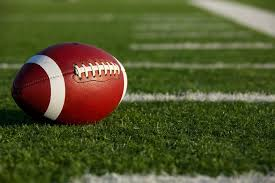
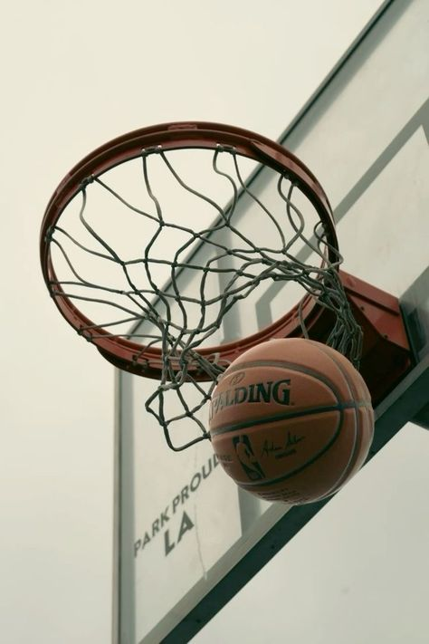
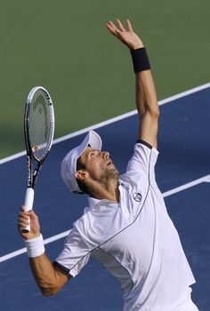

The major football leauge final results are.Manchester City secured a dominant 3-1 victory over Liverpool in the Premier League final, with Erling Haaland scoring twice and Kevin De Bruyne adding another. Despite Mohamed Salah’s early goal, City controlled possession and sealed their title win. Elsewhere, Arsenal finished third after a 2-0 win against Chelsea, while Manchester United secured a Champions League spot with a last-minute 1-0 victory over Tottenham.

In the NBA, several games are set for today, March 27, 2025, including matchups like Mavericks vs. Magic, Spurs vs. Cavaliers, Pacers vs. Wizards, and others. The NCAA Men's Basketball Tournament has reached the Sweet 16, with notable games featuring Alabama facing BYU, where former Rutgers players Cliff Omoruyi (Alabama) and Mawot Mag (BYU) compete against each other. Meanwhile, UConn's coach, Dan Hurley, expressed regret over his recent comments about referees after their loss to Florida, but stood by his coaching methods. On the women's side, USC advanced to the Sweet 16 despite star JuJu Watkins' season-ending ACL tear, thanks to a 96-59 victory over Mississippi State, with Kiki Iriafen stepping up with an impressive performance.

0